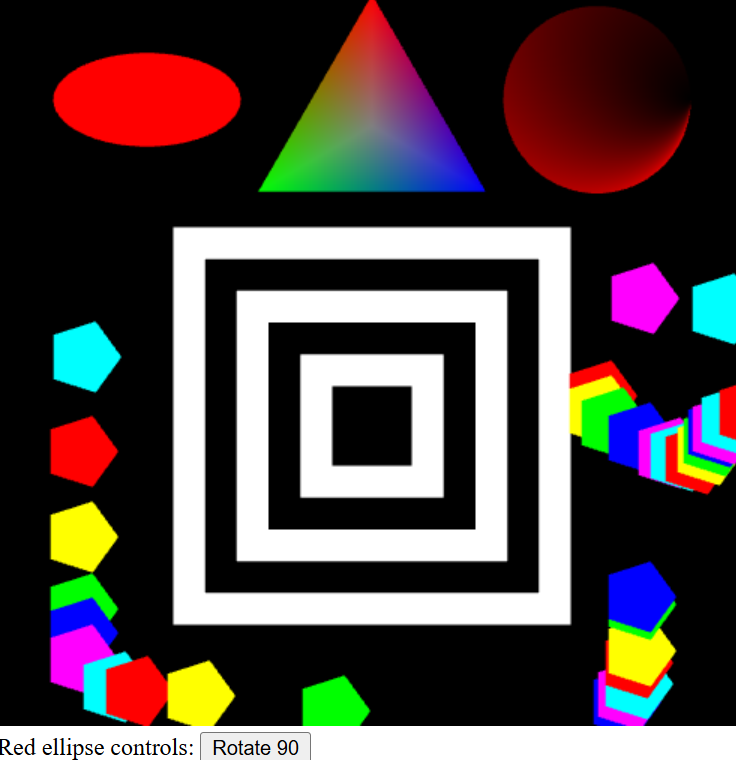
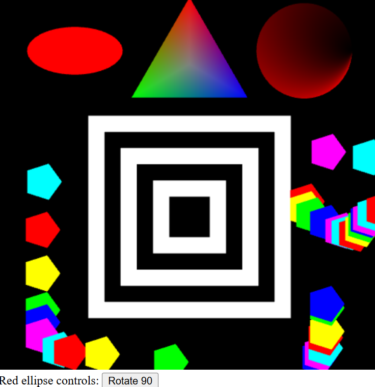

Interactive Computer Graphics:
Fun with WebGL! (this section is under construction)For pages that need models, download them here (.smf models)
- Drawing a square
- 2D Primitives with color
- Mouse and Web Interaction
- 3D Transformations with a cube
- Model Viewer (flat shading)
- Model Viewer (Gourand and Phong shading with materials)
- Bezier Patch
Textured Bezier Patch(lost code)3D Procedural Textures(lost code)- Model Picking (Off screen rendering)


CS636 Advanced Rendering Techniques:
Fun with Raytracing!- Assignment 1 - The Raytracing algorithm
- Assignment 2 - Phong Shading and Point Lights
Assignment 3 - Bounding Volume Heirarchy Acceleration(lost webpage)Assignment 4 - Adaptive Supersampling(lost webpage)Assignment 5 - Shadow Rays(lost webpage)Assignment 6 - Reflection Rays(lost webpage)- Assignment 7 - Refraction Rays
Extra Credit - Spot Lights, Textures, and Cylinders(lost webpage)
 
